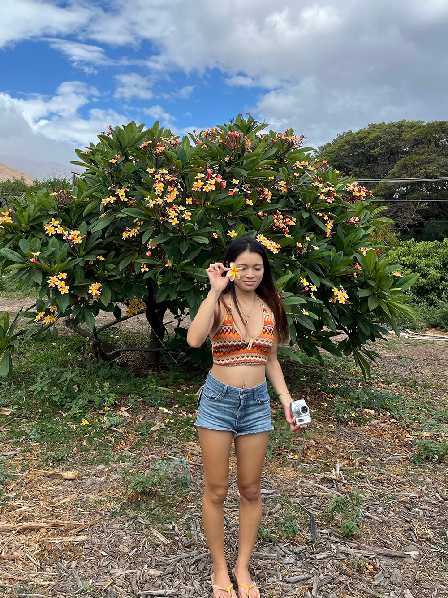

Maya Hashem
By looking at the subject of my design more deeply and from various perspectives, I have been able to discover new ideas and methods to make it easier to communicate. During my time at university, I learned how to create designs that communicate with viewers by using not only the information I was given, but also the knowledge I gained from various angles. I believe that in my design work, I can use a broad perspective to create things that meet the needs of others.
View my resume